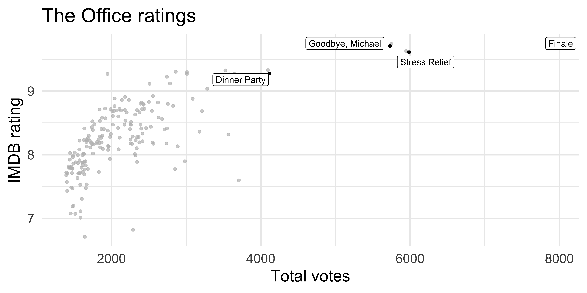

# load packages
library(tidyverse)
library(tidymodels)
library(gghighlight)
library(knitr)
# set default theme and larger font size for ggplot2
ggplot2::theme_set(ggplot2::theme_minimal(base_size = 20))Feature engineering
STA 210 - Summer 2022
Welcome
Announcements
- Check your grades for exam-1
- AE-5 released today but we may cover the content tomorrow
- OH today
Topics
- Review: Training and testing splits
- Feature engineering with recipes
- Workflows to bring together models and recipes
- RMSE and \(R^2\) for model evaluation
- Cross validation
Computational setup
Introduction
The Office

Data
The data come from data.world, by way of TidyTuesday
office_ratings <- read_csv(here::here("slides", "data/office_ratings.csv"))
office_ratings# A tibble: 188 × 6
season episode title imdb_rating total_votes air_date
<dbl> <dbl> <chr> <dbl> <dbl> <date>
1 1 1 Pilot 7.6 3706 2005-03-24
2 1 2 Diversity Day 8.3 3566 2005-03-29
3 1 3 Health Care 7.9 2983 2005-04-05
4 1 4 The Alliance 8.1 2886 2005-04-12
5 1 5 Basketball 8.4 3179 2005-04-19
6 1 6 Hot Girl 7.8 2852 2005-04-26
7 2 1 The Dundies 8.7 3213 2005-09-20
8 2 2 Sexual Harassment 8.2 2736 2005-09-27
9 2 3 Office Olympics 8.4 2742 2005-10-04
10 2 4 The Fire 8.4 2713 2005-10-11
# … with 178 more rowsIMDB ratings

IMDB ratings vs. number of votes
Outliers

Rating vs. air date

IMDB ratings vs. seasons

Modeling
Train / test
Step 1: Create an initial split:
set.seed(123)
office_split <- initial_split(office_ratings) # prop = 3/4 by defaultStep 2: Save training data
office_train <- training(office_split)
dim(office_train)[1] 141 6Step 3: Save testing data
office_test <- testing(office_split)
dim(office_test)[1] 47 6Training data
office_train# A tibble: 141 × 6
season episode title imdb_rating total_votes air_date
<dbl> <dbl> <chr> <dbl> <dbl> <date>
1 8 18 Last Day in Florida 7.8 1429 2012-03-08
2 9 14 Vandalism 7.6 1402 2013-01-31
3 2 8 Performance Review 8.2 2416 2005-11-15
4 9 5 Here Comes Treble 7.1 1515 2012-10-25
5 3 22 Beach Games 9.1 2783 2007-05-10
6 7 1 Nepotism 8.4 1897 2010-09-23
7 3 15 Phyllis' Wedding 8.3 2283 2007-02-08
8 9 21 Livin' the Dream 8.9 2041 2013-05-02
9 9 18 Promos 8 1445 2013-04-04
10 8 12 Pool Party 8 1612 2012-01-19
# … with 131 more rowsFeature engineering
We prefer simple models when possible, but parsimony does not mean sacrificing accuracy (or predictive performance) in the interest of simplicity
Variables that go into the model and how they are represented are just as critical to success of the model
Feature engineering allows us to get creative with our predictors in an effort to make them more useful for our model (to increase its predictive performance)
Variable selection (parsimony) + Variable representation (feature engineering)
Feature engineering : date
Periodic: month or weekday

Feature engineering with dplyr
office_train %>%
mutate(
season = as_factor(season),
month = lubridate::month(air_date),
wday = lubridate::wday(air_date)
)# A tibble: 141 × 8
season episode title imdb_rating total_votes air_date month wday
<fct> <dbl> <chr> <dbl> <dbl> <date> <dbl> <dbl>
1 8 18 Last Day in Flo… 7.8 1429 2012-03-08 3 5
2 9 14 Vandalism 7.6 1402 2013-01-31 1 5
3 2 8 Performance Rev… 8.2 2416 2005-11-15 11 3
4 9 5 Here Comes Treb… 7.1 1515 2012-10-25 10 5
5 3 22 Beach Games 9.1 2783 2007-05-10 5 5
6 7 1 Nepotism 8.4 1897 2010-09-23 9 5
# … with 135 more rowsCan you identify any potential problems with this approach?
Holidays
Modeling workflow
Create a recipe for feature engineering steps to be applied to the training data
Fit the model to the training data after these steps have been applied
Using the model estimates from the training data, predict outcomes for the test data
Evaluate the performance of the model on the test data
Building recipes
Initiate a recipe
Step 1: Alter roles
title isn’t a predictor, but we might want to keep it around as an ID
Step 2: Add features
New features for day of week and month. step_date creates a specification of a recipe step that will convert date data into one or more factor or numeric variables.
Step 3: Add more features
Identify holidays in air_date, then remove air_date
office_rec <- office_rec %>%
step_holiday(
air_date,
holidays = c("USThanksgivingDay", "USChristmasDay", "USNewYearsDay", "USIndependenceDay"),
keep_original_cols = FALSE
)
office_recRecipe
Inputs:
role #variables
ID 1
outcome 1
predictor 4
Operations:
Date features from air_date
Holiday features from air_dateStep 4: Convert numbers to factors
Convert season to factor
Step 5: Make dummy variables
Convert all nominal (categorical) predictors to factors
Step 6: Remove zero variance pred.s
Remove all predictors that contain only a single value
Recipe
Inputs:
role #variables
ID 1
outcome 1
predictor 4
Operations:
Date features from air_date
Holiday features from air_date
Factor variables from season
Dummy variables from all_nominal_predictors()
Zero variance filter on all_predictors()Putting it altogether
office_rec <- recipe(imdb_rating ~ ., data = office_train) %>%
# make title's role ID
update_role(title, new_role = "ID") %>%
# extract day of week and month of air_date
step_date(air_date, features = c("dow", "month")) %>%
# identify holidays and add indicators
step_holiday(
air_date,
holidays = c("USThanksgivingDay", "USChristmasDay", "USNewYearsDay", "USIndependenceDay"),
keep_original_cols = FALSE
) %>%
# turn season into factor
step_num2factor(season, levels = as.character(1:9)) %>%
# make dummy variables
step_dummy(all_nominal_predictors()) %>%
# remove zero variance predictors
step_zv(all_predictors())Putting it altogether
office_recRecipe
Inputs:
role #variables
ID 1
outcome 1
predictor 4
Operations:
Date features from air_date
Holiday features from air_date
Factor variables from season
Dummy variables from all_nominal_predictors()
Zero variance filter on all_predictors()Recap
- Review: Training and testing splits
- Feature engineering with recipes: update role - step -